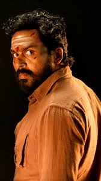

Kaithi is one of my favorite action-thriller movies, starring Karthi. Directed by Lokesh Kanagaraj, this film is a gripping story about a former prisoner who is forced to take on a dangerous mission overnight to save police officers from a drug mafia.
Here are some actors who could have played the lead role in Kaithi besides Karthi.
| Actor | Reason | Age |
|---|---|---|
| Vijay Sethupathi | Great at intense, gritty roles | 45 |
| Fahadh Faasil | Excellent at suspense-driven performances | 41 |
| Madhavan | Can bring depth and emotional weight | 53 |
| Surya | Strong action presence and versatility | 48 |